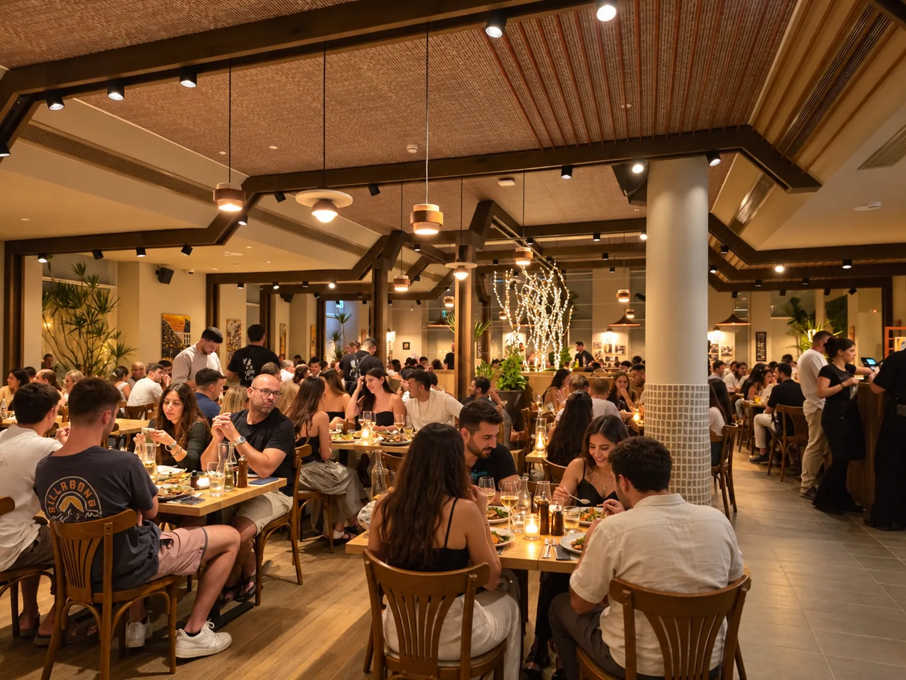

הצהרת נגישות
אנו מחויבים לגישה שווה לכל באי המסעדה ומשתמשי האתר.
מסעדת "קאזה דו ברזיל" רואה חשיבות עליונה במתן שירות נגיש, שוויוני ומכבד לכלל לקוחותיה, לרבות אנשים עם מוגבלות.
אנו משקיעים מאמצים ומשאבים רבים בהנגשת המסעדה ואתר האינטרנט שלנו, מתוך אמונה כי לכל אדם מגיעה הזכות לחיות בעצמאות, בכבוד, בשוויון ובבטיחות. אתר זה עומד בדרישות תקנות שוויון זכויות לאנשים עם מוגבלות (התאמות נגישות לשירות), תשע"ג-2013 (סימן ג'), וכן בתקן הישראלי ת"י 5568 המבוסס על הנחיות WCAG 2.1 ברמה AA.
התאמות נגישות פיזיות במסעדה
כדי לאפשר חוויית אירוח נגישה ועצמאית, ביצענו את ההתאמות הבאות:
- חנייה: שתי חניות נגישות מסומנות כחוק בחזית המסעדה.
- כניסה: בוצעו התאמות נגישות בכניסה הראשית ובשטחי הפנים; הפרשי מפלסים ורוחב מעברים טופלו כנדרש.
- תא שירותים: קיים תא שירותים נגיש לשני המינים, מרווח ונפרד, הממוקם במתחם השירותים הפנימי.
- ניווט וישיבה: מעברים רחבים המאפשרים תנועה חופשית, ריהוט מותאם ושולחנות נגישים המאפשרים כניסה נוחה עם כיסא גלגלים.
- תפריטים: ניתן לצפות בתפריט מונגש באתר האינטרנט שלנו, בדף הייעודי.
- צוות המסעדה: עובדי המסעדה עוברים הכשרות למתן שירות נגיש. הצוות ישמח לסייע בכל שלב בהתאם לנוהל מתן שירות נגיש, לרבות הקראת תפריט, הגשה, התאמת מנות או עזרה פיזית לפי הצורך.
- חיות שירות: כניסה עם כלבי נחייה וחיות שירות מותרת.
נגישות אתר האינטרנט
ההתאמות הבאות בוצעו באתר כדי לאפשר גלישה נוחה לכולם:
- מבנה סמנטי תקני וכותרות היררכיות ברורות.
- תמיכה מלאה בניווט באמצעות המקלדת (מקש Tab למעבר, חצים לגלילה).
- טקסט חלופי (Alt Text) לתמונות ולרכיבים גרפיים.
- ניגודיות צבעים גבוהה העומדת בדרישות התקן.
- אפשרות להגדלת הגופן והטקסט עד 200% דרך הדפדפן, ללא פגיעה בנראות האתר.
- התאמה מלאה לצפייה בדפדפנים מודרניים (Chrome, Firefox, Edge, Safari) ובמכשירים ניידים.
- הימנעות מוחלטת משימוש באלמנטים מהבהבים או מסיחי דעת.
פערים והחרגות נגישות
אנו פועלים ללא הרף לשמירה על רמת נגישות מקסימלית, אך לעיתים קיימים רכיבים זמניים או מערכות חיצוניות שטרם הונגשו במלואן:
- מערכת הזמנת מקומות: נכון למועד זה, רכיב הזמנת השולחנות באתר אינו נגיש באופן מלא ודורש שימוש בעכבר. חלופה נגישה: ניתן להזמין מקום בקלות ובנגישות מלאה בשיחה או בהודעה לטלפון 08-6323032, או בוואטסאפ 050-8444775.
- תכני צד שלישי ומסמכים ישנים: סרטונים חיצוניים, קובצי PDF ישנים או רכיבים של ספקים חיצוניים עלולים להציג פערים זמניים. אם נתקלתם במסמך שאינו נגיש, צרו עמנו קשר ונשמח לספק לכם גרסה נגישה שלו.
דרכי פנייה ודיווח על אי-נגישות
אם במהלך הגלישה באתר או במהלך הביקור במסעדה נתקלתם בקושי, בבעיית נגישות, או אם ברצונכם לבקש התאמה מיוחדת (כגון שולחן ספציפי או עזרה מראש) - נשמח מאוד לשמוע מכם ולטפל בהקדם האפשרי. ניתן לפנות לרכז הנגישות שלנו בערוצים הבאים:
- רכז הנגישות: יובל כראל
- טלפון: 054-5212436
- דואר אלקטרוני: yuval@carel.co.il
- כתובת למשלוח דואר: דרך הערבה 23, אילת (מתחם מלון איסלה בראון)
אנו מתחייבים לטפל בכל פנייה במקצועיות ובזמן סביר.
תאריך עדכון אחרון: מאי 2026